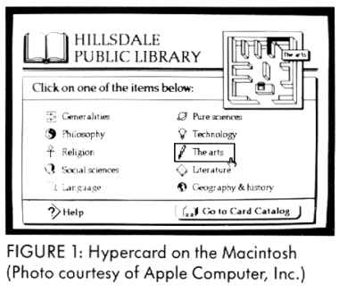

START VOL. 2 NO. 3 / WINTER 1987 / PAGE 63
START VOL. 2 NO. 3 / WINTER 1987 / PAGE 63The ST's Zoomracks came first
by Elizabeth Metzger Armstrong
When Apple's new Hypercard won the spotlight during last summer's Macworld Expo in Boston, Apple called it the next big breakthrough in software. Macintosh owners weren't the only ones to be curious about it, though. Three thousand miles away, in a small, second-floor office in the heart of CaIifornia's Silicon Valley, Paul Heckel paused to wonder what all the hoopla was about.
Heckel had every reason to wonder. He's the founder and president of a five-year-old company called QuickView Systems, and a 20-year computer veteran and software designer. Among other accomplishments, he developed the Craig Language Translator, a hand-held computer that could translate words and phrases for travelers, and wrote one of the definitive books on program design, The Elements Of Friendly Software Design (Warner Books, 1984).
Two years ago Quickview introduced Zoomracks I, a personal productivity program for the Atari ST and IBM AT and compatibles that pioneered the "cards and stacks" metaphor upon which HyperCard is based. Both programs give users who have little or no computer experience a new class of productivity tool that Heckel calls easebase, an acronym for "Card And Stack Environment Data Base." Both provide an "Erector set" with which users can snap together different applications from text, database, and (in HyperCard) graphics files.

In spite (or perhaps because) of Zoomracks's undeserved backstage role, Heckel enthusiastically takes on the part of Zoomracks's most optimistic advocate and cheerleader, a process he whimsically describes as "like a voice crying out in the wilderness." Donning a multitude of hats- company founder, president, software designer, marketing manager, creative director, publicist and customer support person-he spends most of his waking hours trying to get the word out about Zoomracks II, which has been on the market since November 1986.
BEHIND ZOOMRACKS
Over a cup of coffee, Heckel explained his design philosophy behind
Zoom-racks, a program that took three years to produce.
"What I was designing as much as anything else was a mental model I wanted to put into the mind of the user," says Heckel. "That's where the metaphor comes in. It's important to have a model of something that's familiar Cards are familiar Racks are familiar. This gives people a constant reference base.
"The metaphor has to be simple. A spreadsheet is a good example. It gives people a base that is independent of the program. In word processing, the scroll is the basic metaphor.
"In Zoomracks, you have the time card rack, just like a time card rack at work. You can take a card out of the rack and zoom in on it to see what's on the card. The nice thing about Zoom-racks is that you're treating everything in the program as cards on racks. When you really get down to it, it's very simple."
The image of an Erector set also gives users a powerful image with which they can snap together different applications, according to Heckel. "The cards and racks are the girders," he says. "The templates, macros and output forms serve as the program's nuts and bolts." Templates in Zoomracks specify how information is displayed on the screen, and macros let you save a series of keystrokes to perform repetitive functions.
Heckel cites VisiCalc as an example of a successful program that uses a "familiar mental model," one that, like Zoomracks and HyperCard, "replaced a bunch of different applications with a common mental model, the spreadsheet." He explains, "VisiCalc took off because once you understood it the program became a very useful tool for solving a wide variety of problems. The same with Zoomracks and HyperCard. People don't want to learn 27 different applications. They want to learn one. The real value of these programs is that they support a wide variety of applications."
With a background in electrical engineering and programming and an M.B.A., Heckel understands and consciously avoids both the marketing person's "let's get the product off the shelf as quickly as possible" approach and the programmer's "feature-itis" - the tendency to write more and more features into their programs.
"The essence of what we're doing is cards and racks," Heckel says. "My philosophy is to try to make the cards and racks as powerful as possible, not to crowd the program with a lot of useless features. What we're trying to do is to make the program very simple, vanilla-flavored, so that anybody can look in it and see the reflection of his or her own needs. This is the main reason why you get such diversity with Zoomracks and HyperCard.
"The philosophy I took at one point was, 'I don't know where the card and stack metaphor is going to lead me, but wherever it does is where I'm going to go.' That's not a lot different from a novelist who doesn't know where his characters are going to take him, but he ends up following them in that direction. When there were design choices to make, the standard criteria 1 used was 'Which one enhances the rack metaphor?' not 'Which one will sell better or be more superficially useful?'"
KNOWING YOUR AUDIENCE
One of the basic premises in Heckel's book, The Elements Of Friendly
Software Design, is knowing who your audience is. For Heckel, knowing his
audience is a major part of his effort, not only to spread the word about
Zoomracks, but Zoomracks, but to keep in touch with how his small but loyal
band of Zoomracks enthusiasts are using his program. Last summer he took
on the formidable task of surveying 91 Zoomracks users. The results were
gratifying: a newspaper reporter uses Zoomracks to cover presidential campaigns
and conventions; a hair dresser for running her business; a photographer
and a psychologist for organizing their businesses; a fifth-grade student
for taking social studies notes and reviewing for tests.
For a man whose ground-breaking program has gone unnoticed by much of the media until now, Heckel shows no resentment toward Hypercard author Bill Atkinson, whose creativity and integrity he admires. "I know one of the reasons HyperCard and Zoomracks are so different is that he [Atkinson] did not just go and look at Zoomracks and get ideas from it. He developed his own ideas, his own creative endeavor, and his own way of doing things.
"The main differences between the two programs is that HyperCard is strong in graphics and fonts, while Zoomracks is better equipped to let you do all the things you'd do in a small office. That's because we have a multi-card mode, output format, and 250-line fleldscrolls." Multicard mode lets you see only the top line of each card in a stack, so you can quickly spot the card you need-and 250-line fieldscrolls offer a five-page capacity for each field of information.
What about the uproar over HyperCard? "Apple has a big advantage," Heckel explains. "They had 200 people in-house using the program. They started with five, and ended up with ten testers. So, although the basic group of four was small, there was a significant support structure for the product. Bill was able to make the product mature rapidly.
"Apple is making this a big thing. They're bundling HyperCard with every Macintosh, saying the program is the wave of the future. They know it's the kind of product its users will be enthusiastic about in six months, no matter what the reviewers say.
"But the real question is, why are they pushing this particular product? Because of the tremendous variety of things it does, because of the stackware opportunities, HyperCard becomes the opportunity for Apple to have a new standard and attract a new base of users. Apple is saying, 'It's a whole new ballgame.'"
While Apple predicts the next big breakthrough with HyperCard, Heckel heralds a new age of productivity software with Zoomracks. "I believe Zoom racks will really change the way people use computers," he says. "From the users survey, I know that people are already using Zoomracks for at least five applications instead of one. Two years from now they'll be using ten.
"John Sculley was right when he said that HyperCard is going to change the way people use computers," Heckel says with a chuckle. "And I've got an idea for an ad which, if I can finance it will go like this -'Thank you, Apple, for HyperCard. But remember, we were there first.'"
Elizabeth Metzger Armstrong is a San Francisco freelance journalist, software reviewer and documentation writer
PRODUCTS MENTIONED
Zoomracks II, Quickview Systems, 146 Main Street, Suite 404, Los
Altos, CA 94022, (415) 965-0327. $149.95
CIRCLE 175 ON READER SERVICE CARD
The Elements Of Friendly Software Design by Paul Heckel, Warner Books,
$8.95
CIRCLE 178 ON READER SERVICE CARD